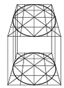
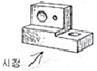
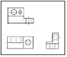
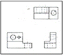
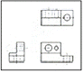
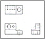
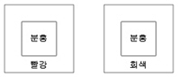
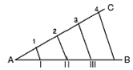
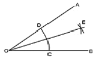
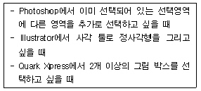

컴퓨터그래픽스운용기능사 (2008-03-30 기출문제)
1과목: 산업디자인 일반
1. 다음 중 제품수명주기의 순서가 바르게 나열된 것은?
- 성장기-성숙기-쇠퇴기-도입기
- 도입기-성숙기-성장기-쇠퇴기
- 성장기-도입기-성숙기-쇠퇴기
- 도입기-성장기-성숙기-쇠퇴기
(정답률: 93%)

2. 다음 중 표적시장에 영향을 주기 위해 기업이 사용하는 통제 가능한 변수의 집합을 의미하는 용어는?
- 마케팅 믹스
- 마케팅 관리
- 마케팅 전략
- 마케팅 기술
(정답률: 78%)
3. 면에 관한 설명 중 가장 옳은 것은?
- 평면은 곧고 평활한 표정을 가지며, 간결성을 나타낸다.
- 수직면은 동적인 상태로 불안정한 표정을 주어 공간에 강한 표정을 더한다.
- 수평면은 고결한 느낌을 주고, 긴장감을 높여준다.
- 사면은 정지 상태를 주고 안정감을 나타낸다.
(정답률: 71%)
4. 다음 디자인에 관한 설명 중 적절하지 않은 것은?
- 디자인이란 하나의 그림 또는 모형으로서 그것을 전개시하는 계획 및 설계이다.
- 디자인이란 사람이 사회생활을 하는데 필요한 정신적, 물질적, 기대를 구체적으로 만들어 환경에 적용시켜 가는 과정이다.
- 디자인이란 넓은 의미에서는 도시환경계획이나 세계 박람회의 기본 계획 등 대형 과제물까지도 포함한다.
- 디자인이란 인간의 의도와는 무관하며 자연물의 질서와 문양을 모방하여 제창조하는 과정이다.
(정답률: 87%)
5. 다음 중 제품을 구성하는 기본 인자들과 가장 관련이 없는 것은?
- 구조
- 재료
- 특허
- 형태
(정답률: 93%)
6. “구매시점 광고” 고도 하는 것으로 소비자가 상품을 구매 하는 장소에서 이루어지는 광고는?
- 디스플레이
- P.O.P광고
- 신문광고
- 상품광고
(정답률: 88%)
7. 다음 중 실내디자인의 요소에서 평면적으로 정적인 요소이나 입체적으로는 수직의 선적인 요소로 벽면과 독립되는 경우 새로운 공간감을 생성하는 것은?
- 창
- 문
- 계단
- 기둥
(정답률: 73%)
8. 독일공작연맹의 이념을 계승한 운동은?
- 미술공예운동
- 아르누보
- 아르데코
- 바우하우스
(정답률: 67%)
9. 디자인 프로세스 접근방식에서 과학적이고 체계적인 사고를 바탕으로 하는 글라스(glass box) 방법에 대한 설명으로 옳은것은?
- 디자이너의 직관을 중심으로 행해지는 방법이다.
- 투입되는 요소와 산출물이 나오는 과정이 비교적 명확하게 식별된다.
- 평가에 비중을 두는 새로운 방법이다.
- 디자인 문제를 해결하기 위해 어떤 방법을 이용하여 어떻게 풀 것인가를 결정하는 것이다.
(정답률: 59%)
10. 아이디어를 발전시키기 위해 포착된 이미지를 비교, 검토하기 위한 스케치의 종류는?
- 스타일 스케치
- 러프 스케치
- 스크레치 스케치
- 섬네일 스케치
(정답률: 63%)
11. 전화기, 타자기, 사진기, 축음기, 재봉틀, 전구 등이 발명되어 상업화됨으로써 미국의 대표적인 기계제품의 이미지를 대변한 시대는?
- 1850년대~1860년대
- 1870년대~1880년대
- 1890년대~1900년대
- 1910년대~1920년대
(정답률: 66%)
12. 디자인의 요소로서 빛에 대한 설명 중 잘못된 것은?
- 빛은 거칠거나 부드러움, 무르거나 단단함 등의 촉각적인 성질을 가지고 있다.
- 빛은 입체의 표면을 드러나게 한다.
- 빛의 밝음과 어두움도 조형대비나 색채대비 못지않게 중요한 요소이다.
- 움직이는 네온사인, 영화, 텔레비전, 멀티스크린 등은 빛이 만들어내는 것이다.
(정답률: 84%)
13. 다음의 디자인 과정 중에서 정해진 재료로서 대량생산에 따른 규격화와 제품의 경제성을 고려하여 재료에 형태를 주는 과정은?
- 욕구과정
- 조형과정
- 재료과정
- 기술과정
(정답률: 45%)
14. 다음 중 균형의 요소에 해당되지 않은 것은?
- 대칭
- 연속
- 비대칭
- 비례
(정답률: 68%)
15. 각 포장 표면에 굵기가 다른 수직선과 그 밑에 숫자로 인쇄된 기호인 바코드의 장점이 아닌 것은?
- 상품의 가격을 수동으로 찍는 방법보다 정확하다.
- 계산서의 보관이 가능하다.
- 계산하는 번거로움이 있어 시간이 늦다.
- 식품 경영에 합리성이 있다.
(정답률: 93%)
16. 포장디자인의 개발 요건과 거리가 가장 먼 것은?
- 제품의 형태성
- 유동적 취급성
- 소비자 사용성
- 재활용 장식성
(정답률: 71%)
17. 실내디자인의 설계단계에서 특수한 기술 분야의 부분적 설계를 전문 업체가 작성하여 제시하는 도면은?
- 워킹 드로잉
- 샵 드로잉
- 프리핸드 드로잉
- 컴퓨터 드로잉
(정답률: 65%)
18. 다음 중 편집디자인의 형태별 분류 중 스프레드 스타일(Spread Style)에 속하는 것은?
- 잡지, 사보, 화집
- 일간신문, 카탈로그, 팜플렛
- 안내장, 레터해드, DM
- 단행본, 브로슈어, 명함
(정답률: 67%)
19. 실내디자인의 실체화 과정에서 가장 먼저 고려해야 할 것은?
- 용도
- 형태
- 재료
- 환경
(정답률: 65%)
20. 다음 중 1:2:3:5:8:13...과 같은 수열에 의한 비례는?
- 등비수열
- 루트비
- 정수비
- 피보나치수열
(정답률: 74%)
2과목: 색채 및 도법
21. 유채색에 대한 설명 중 잘못된 것은?
- 순수한 무채색을 제외한 모든 색을 유채색이라 한다.
- 유채색이란 채도가 있는 색이란 뜻이다.
- 유채색에 무채색을 혼합한 결과, 색상의 느낌이 있어도 무채색이라 한다.
- 유채색은 색의 3속성을 모두 가지고 있다.
(정답률: 82%)
22. 다음 그림과 가장 관련 있는 것은?

- 정투상도
- 사투상도
- 투시도
- 부등각 투상도
(정답률: 60%)
23. 다음 색채의 일반적인 성질 중에서 보색 관계는?
- 청색과 탁색
- 유채색과 무채색
- 고명도와 저명도
- 한색과 난색
(정답률: 79%)
24. 다음 색 중 보색관계로 짝 지워진 것은?
- 5 R-5 BG
- 10Y- 10RP
- 5 B-10 YR
- 5 P-10GY
(정답률: 65%)
25. 투시도법에서 물체의 각 점이 수평선상에 모이는 점은?
- 시점(E)
- 입점(SP)
- 소점(VP)
- 측점(MP)
(정답률: 81%)
26. 다음 중 색의 동화현상이 가장 잘 일어나는 문양은?
- 좁고 복잡한 문양
- 넓고 단순한 문양
- 반대 색상의 넓은 문양
- 팽창색으로 구성된 문양
(정답률: 59%)
27. 먼셀 표색계의 채도에 대한 설명 중 틀린 것은?
- 채도는 색상의 강약을 말한다.
- 채도는 색상이 있을 때만 나타난다.
- 순색은 한 색상에서 무채색의 포함량이 가장 적은 채도의 색을 말한다.
- 모든 색상의 채도단계는 동일하다.
(정답률: 73%)
28. 아래의 물체를 제3각법으로 바르게 나타낸 것은?





(정답률: 64%)
29. 색명법에 대한 설명으로 틀린 것은?
- 관용색명은 전통적으로 사용해 온 색명법이다.
- 일반색명은 색의 3속성으로 색을 표시하는 색명법이다.
- 한국 산업규격에서는 일반 색명 한 가지만 규정되어 있다.
- 장미색. 살구색, 등은 관용 색명법에 따른 색명이다.
(정답률: 84%)
30. 다음 중 인접색 조화의 배색으로 가장 좋은 예는?
- 자주-보라-남색
- 빨강-녹색-청록
- 다홍-빨강-파랑
- 주황-파랑-자주
(정답률: 84%)
31. 조명조건에 따라 광수용기의 민감도가 변화되어 추상체와 간상체의 활동이 바뀌는 것과 인접한 것은?
- 명암순응
- 색순응
- 항상성
- 빛의 강도
(정답률: 57%)
32. 원의 투시도 작성 과정에 관한 설명으로 틀린 것은?
- 임의의 정육면체 투시도를 그린다.
- 대칭면에 각각 대각선을 그려 중심점을 구한다.
- 투시 중심점을 지나는 투시선을 긋고 각 변을 2등분 한다.
- 각 변의 중심점에 내접하는 딱딱한 직선을 그린다.
(정답률: 63%)
33. 아래와 같이 선명한 빨강 바탕에 분홍색을 놓았을 때와 회색 바탕에 분홍색을 놓았을 때, 다음 설명 중 옳은 것은?

- 빨강 바탕의 분홍색이 채도가 높아 보인다.
- 회색 바탕의 분홍색이 채도가 높아 보인다.
- 두 경우 모두채도의 변화가 없다.
- 두 경우 모두 채도가 높아진다.
(정답률: 81%)
34. 병원 수술실에서 의사들이 청록색 가운을 입는 것은 색채의 어떤 현상을 방지하기 위한 것인가?
- 흥분
- 잔상
- 대비
- 심리적 압박
(정답률: 76%)
35. 색의삼속성에서 따라 오메가 공간이라는 색입체를 만들고, 색체조화의 정도를 정량적으로 설명한 색체 조화론은?
- 비렌의 색채조화론
- 세브럴의색채 조화론
- 문. 스펜서의 색체 조화론
- 오스트발트의 색채 조화론
(정답률: 73%)
36. 다음 그림과 같은 도법을 무엇을 하기 위한 것인가?

- 삼각형을 같은 면적으로 나누기
- 직선을 n 등분하기
- 수직선 긋기
- 사디리골 그리기
(정답률: 87%)
37. 다음 중 정투상법에 속하는 것은?
- 제3각법
- 사투상법
- 등각투상법
- 투시투상법
(정답률: 66%)
38. 다음 그림과 같이 주어진 각∠AOB를 2등분하는 작도에서 틀린 것은?

- ∠AOE = 1/2∠AOB
- ∠EOB = 1/2∠AOB
- ∠AOE = ∠EOB
- 1/2∠AOE = ∠EOB
(정답률: 79%)
39. 색채, 질감, 형태, 무늬 등이 어떤 체계를 가지고 점점 커지거나 강해져 동적인 리듬감을 생겨나게 하는것은?
- 스케일
- 비례
- 대비
- 점이
(정답률: 76%)
40. 선의 종류에 관한 설명 중 틀린 것은?(오류 신고가 접수된 문제입니다. 반드시 정답과 해설을 확인하시기 바랍니다.)
- 실선은 물체의 외형을 표시하는 선이다.
- 가는 실선은 치수선, 지시선, 해칭선 등에 사용한다.
- 파선은 보이는 부분의 모양을 표시하는 선이다.
- 가는 일점쇄선은 중심선, 절단선, 상상선, 피치선 등에 사용된다.
(정답률: 76%)
3과목: 디자인 재료
41. 재료의 응력을 옳게 설명한 것은?
- 재료의 한쪽 면에서 서로 끌어당기는 힘
- 재료의 한쪽 면에서 눌러주는 힘
- 재료 외부의 압력에 대하여 내부에서 저항하는 힘
- 재료를 구부리기 위하여 가하는 힘
(정답률: 72%)
42. 찬 느낌을 주고수분의 흡수와 발산이 빨라서 여름 의복에 적합한 식물성 섬유는?
- 황마
- 견
- 아마
- 케이폭
(정답률: 60%)
43. 유기재료의 주요소는?
- 산소
- 불소
- 탄소
- 비소
(정답률: 82%)
44. 인화 결과 검은 흡집선이 생기는 원인은?
- 네거티브 케리어 위의 먼지
- 필름의 유제층이나 필름 뒷면의 흠집
- 오랜 시간 현상액에 둔 경우
- 외부에서 암실로 들어온 빛
(정답률: 68%)
45. 플라스틱 재료의 특성이 아닌 것은?
- 전기 절연성이 우수하다.
- 열전도율이 낮다.
- 가공이 용이하고 디자인의 자유도가 높다.
- 표면의 강도가 크고, 불합성 재료이다.
(정답률: 62%)
46. 용해된 유리소지를 취관 끝에 두고 입으로 불러 늘리는 방법의 성형법은?
- 앰플제법
- 평판법
- 수취법
- 롤러법
(정답률: 75%)
47. 목재의 상처 종류에 속하지 않는 것은?
- 옹이
- 혹
- 껍질박이
- 나이테
(정답률: 83%)
48. 다음 중 핫 스프레이 도장의 장점으로 옳은 것은?
- 건조에 시간이 빨라 수정이 용이하다.
- 스프레이건이 가벼워 조작하기가 쉽다.
- 광택이 좋으며, 공기의 소비량이 작다.
- 밑바탕이 단단하지 않아도 상하지 않는다.
(정답률: 51%)
4과목: 컴퓨터 그래픽스
49. 다음 중 웹디자인에서 특정 색상을 투명하게 만드는 투명 인덱스(Transparency Index)를 하기 위한 파일 포맷은?
- JPEG
- GIF
- EPS
- HTML
(정답률: 56%)
50. 랜더링시 광원에서 나오는 광선을 추적하여 물체에 빛의 반사율, 굴절률을 계산하는 렌더링 표현 방식은?
- Ray Tracing
- Mapping
- Extruding
- Painting
(정답률: 63%)
51. GUI를 바탕으로 하는 운영체제에서 제공하는 휴지통의 설명 중 잘못된 것은?
- 시스템에서 완전히 삭제하기 전에 잠시 보관하는 장소이다.
- 휴지통에 들어 있는 파일은 디스크의 공간을 차지하지 않으므로 디스크 관리에 용이하다.
- 휴지통에 들어있는 파일은 휴지통을 비우기 전까지 언제든지 복원할 수 있다.
- 일부 시스템 파일은 휴지통에 버릴 수 없도록 안전장치를 해놓고 있다.
(정답률: 84%)
52. 그래픽 작업시 화면상에 나타나는 아이콘, 객체의 선택을 위하여 마우스의 움직임과 동일하게 움직이는 화살표 또는 십자모양의 그래픽 표현 방법은?
- 윈도우(Window)
- 메뉴(Menu)
- 툴(Tool)
- 커서(Cursor)
(정답률: 90%)
53. 비트맵 파일 포맷이 아닌 것은?
- GIF
- PCX
- PCT
- BMP
(정답률: 49%)
54. 그래픽 작업에서 레이어 합성을 위한 블랜드 모드의 특성에 대한 설명 중 잘못된 것은?
- Dissolve : 이미지 내의 원래 색상 값에 나중 이미지의 값이 픽셀 단위로 불규칙하게 흩뿌려진다.
- Multiply : 이미지 내의 원래 색상 값에 나중 이미지의 값이 곱해져서 적용되기 때문에 결과 색상은 언제나 어두워진다.
- Difference : Multiply 모드와는 반대로 결과 색상이 원래의 색상이나 더해지는 색상에 비해 언제나 밝게 나온다.
- Darken : 원래의 색상에서 더해지는 색상보다 밝은 픽셀에만 툴이 적용되고 결과적으로 이 모드가 적용된 이미지는 어두워진다.
(정답률: 55%)
55. 디스플레이 화면 표시를 두루마리를 볼 때와 같이 상하 좌우로 움직이는 것으로, 윈도우 방식의 프로그램에 있는 우측과 하단에 있는 표시의 이름은?
- 아이콘(Icon)
- 포인터(Pointer)
- 스크롤바(Scroll bar)
- 룰러(Rulers)
(정답률: 83%)
56. MIT 출신으로 '스케치 패드'라는 컴퓨터 드로잉 프로그램을 개발하여 컴퓨터그래픽스의 큰 발전을 가져온 사람은?
- 이반 서더랜드(Ivan Sutherland)
- 존 휘트니(John Whitney)
- 밥 노이스(Bob Noyce)
- 스티브 러셀(Steve Russell)
(정답률: 50%)
57. 모니터의 색상을 출력물과 가깝게 조절하는 과정은?
- 세퍼레이션(Separation)
- 캘리브레이션(Calibration)
- 옵션(Option)
- 새츄레이션(Saturation)
(정답률: 77%)
58. 다음의 상황에서 공통적으로 사용하는 키보드의 키(Key)는?

- Shift
- Option
- Command
- Control
(정답률: 82%)
59. 8 Bits 는 몇 개의 코드 조합이 가능한가?
- 8
- 16
- 64
- 256
(정답률: 71%)
60. 3차원 모델링에서 물체의 외곽선만으로 대상물의 형체를 나타내는 방법은?
- 매핑(Mapping)
- 목업 모델링 (Mock-up Modeling)
- 히든 라인(Hidden Line)
- 와이어 프레임 모델링(Wire Frame Modeling)
(정답률: 73%)
제품수명주기는 제품이 출시되어서부터 쇠퇴할 때까지의 과정을 나타내는 것입니다. 따라서 처음에는 도입기로 제품이 출시되고, 이후에는 성장기로 제품이 많은 수요와 판매량을 얻게 됩니다. 그리고 성숙기로 접어들면서 시장에서 경쟁이 치열해지고 판매량이 점차 감소하게 됩니다. 마지막으로 쇠퇴기로 접어들면 제품의 수요와 판매량이 급격하게 감소하게 됩니다. 따라서 제품수명주기의 순서는 도입기-성장기-성숙기-쇠퇴기가 됩니다.